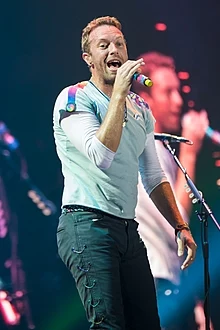
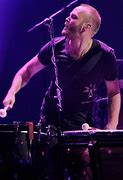
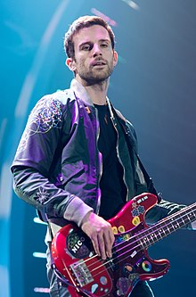

Christopher Anthony John Martin, más conocido como Chris Martin, nació el 2 de marzo de 1977 en Exeter (Inglaterra). Es un cantante, músico, compositor, productor discográfico, activista social y filántropo británico. Es reconocido por ser fundador y vocalista principal de la banda británica Coldplay. Además, conocido por su activismo en campañas a favor del comercio justo y por estar en contra del hambre en el mundo.
Alcanzó la fama mundial con el lanzamiento del sencillo "Yellow" en el año 2000, una canción que también le valió a la banda su primera nominación al Premio Grammy por Mejor Canción de Rock. También obtuvieron aclamación de la crítica y varios elogios por sus álbumes subsiguientes, incluyendo A Rush of Blood to the Head y Viva la Vida, ganando un premio Brit por el primero y el premio Grammy por ambos.
Buckland utiliza en gran medida la Telecaster Thinline 72' como su guitarra eléctrica primaria, como se ve principalmente en los álbumes Viva La Vida or Death and All His Friends, X&Y y Mylo Xyloto. Utiliza la Fender Stratocaster como su guitarra secundaria, pero él ha dejado claro que la serie Telecaster es su favorita. También ha utilizado de la marca Gibson y las de estilo retro, Nash. Su estilo de guitarra ha sido comparado principalmente al sonido de guitarra de The Edge, que se compone de zumbidos, notación conservadora, varios amplificadores y distorsionadores, y crudeza musical. Ha inspirado a muchas otras bandas a adoptar una técnica similar como los guitarristas Joe King de The Fray, David Keuning de The Killers y Pat Monahan de Train, en algunas canciones.
William Champion, más conocido como Will Champion nació el 31 de julio de 1978 en Southampton (Inglaterra), es un músico y compositor británico. Es baterista y voz secundaria de la banda. Fue el último en unirse a Coldplay el 31 de julio del año 1997 mientras la banda seguía buscando su nombre definitivo, reemplazando al baterista anterior que iba a ser su compañero de habitación, tenía otras ocupaciones y no estaba presente para realizar un ensayo con la banda. En el año 1999 sería expulsado del grupo por Martin, durante la grabación del The Blue Room EP por problemas sobre su forma de tocar la batería que a los productores y otros miembros de la banda no les parecía adecuado, pero poco tiempo después sería reintegrado nuevamente, siendo el mismo Chris Martin quien se disculpó y se lo pidió.
Normalmente usa sets de batería de la marca Yamaha con timbales Zildjian, comenzando con un Yamaha 9000 y un set Yamaha Maple desde el 2002. En el vídeo musical de “Christmas Lights", tocó un set de Slingerland y tambor marca Ludwig de 14x6.5 cm. En las baquetas, Champion utilizó Pro-Mark's American Hickory 5A de madera. No fue sino hasta el A Head Full of Dreams Tour (que inició en marzo de 2016 y finalizó en noviembre de 2017) que pudo tener su propio set de batería personalizado, porque anteriormente todos sus instrumentos que utilizaba eran de la banda o de las compañías que producían las presentaciones en vivo.
Guy Rupert Berryman nació el 12 de abril de 1978 en Kirkcaldy (Escocia) es el bajista de la banda y del supergrupo experimental Apparatjik. Antes de la formación de Coldplay en la University College London, Berryman conoció a Jonny Buckland y Chris Martin en una clase que tuvieron en común y se hicieron más cercanos al pasar tiempo en la residencia estudiantil Ramsay Hall, donde también compartieron con otros estudiantes.
Ha tocado varios tipos de bajos eléctricos, siendo sus favoritos los de la marca Fender y Rickenbacker, como el Fender American Standard Precission Bass como se puede ver en el tour de Viva La Vida, Fender Sean Hurley que utilizó para varios conciertos del tour musical de A Rush of Blood to the Head, Fender Nate Mendel y Vintage Fender que tocó en conciertos para el álbum Mylo Xyloto. En el vídeo musical de Christmas Lights se le ve tocando un Höfner 500/1 Bass. Ha coleccionado otros tipos de bajos, como el Moon Costume Acoustic Bass. También ha tocado mandolina, yangqin, y guitarras, en algunos shows y para otros de sus proyectos musicales.